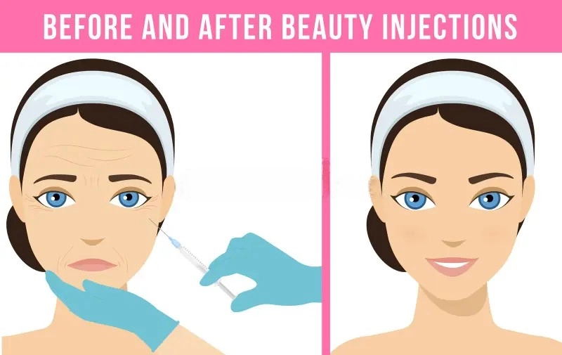

Botox / Dysport
Ενδείξεις: δυναμικές ρυτίδες (μέτωπο,
μεσόφρυο, «πόδι χήνας», βάση της μύτης, γωνίες χειλέων,
πηγούνι, κάτω γνάθος, λαιμός), ημικρανίες, βλεφαρόσπασμος,
υπεριδρωσία (μασχάλες, παλάμες, πέλματα).
Διαδικασία: μικροενέσεις σε στοχευμένους
μύες, διάρκεια συνεδρίας λίγα λεπτά, χωρίς αποχή από τις
καθημερινές δραστηριότητες (lunch time therapy).
Κίνδυνοι/Περιορισμοί: εκχυμώσεις, παροδική
αδυναμία γειτονικών μυών, διάρκεια ~4-5 μήνες.
Εναλλακτικές: συσκευές ενέργειας ή skincare
με ηπιότερο αποτέλεσμα.